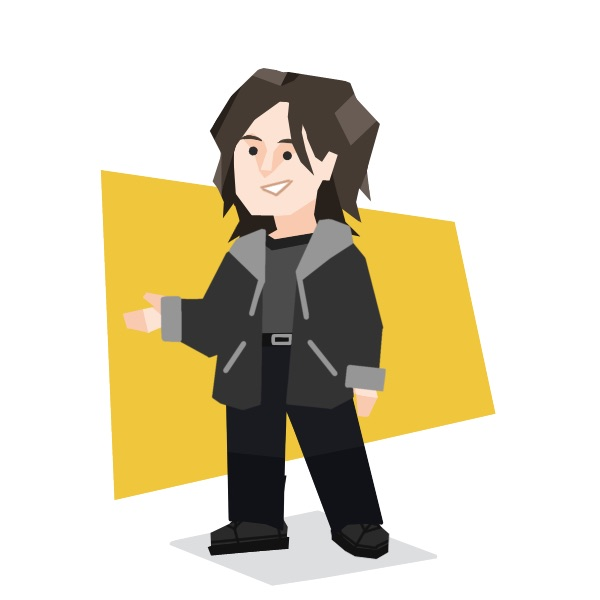

About the Author
Anna Benjamin
Since its creation, Anna Benjamin has been the lead writer for the micro-famous blog Waste Web. Appalled by the amount of waste generated, Anna records and uploads her weekly on her blog in an attempt to give meaning to discarding items and reduce the amount of trash thrown away. Every week, Anna can be spotted uploading her newest blog post without proofreading, leaving all potential grammatical errors to fate. Besides being a blogger, Anna is a student at Blank University, hoping to graduate with a degree not due to a great passion for academia but rather due to being a victim of the sunk cost theory. Anna is known for not wearing thick jackets during the coldest times of the year but has ironically been hoping that she does not get this season's allegedly awful flu. Anna constantly knocks out assignments left and right; however, in her free time, she practices the bass guitar and piano, along with the occasional recorder, to annoy her roommates. You can find Anna on GitHub.